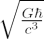
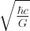
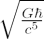

One of the goals of physics is to determine and measure the fundamental constants. The four most important of these are:
| Speed of light | c = 299792458 m s-1 |
| Gravitational constant | G = 6.673(10) x 10-11 m3 kg-1 s-2 |
| Planck’s constant (reduced) | |
| Boltzmann constant | k = 1.3806503(24) x 10-23 kg m2 s-2K-1 |
Note that we have expressed these constants in SI units: metres (m), kilograms (kg), seconds (s) and degrees Kelvin (K). The numbers in brackets represent the decimal places where the values are uncertain.
The numerical values of these fundamental constants depend on the system of units that we use to measure them. Although metres, kilograms and seconds are well-suited to our everyday experiences of distance, mass and time, they are not always useful when dealing with more complex aspects of the Universe. It is sometimes more convenient to introduce a set of units for measuring length, mass and time that are derived (dimensionally) from combinations of the fundamental constants. These units are known as the Planck Units (after Max Planck, the physicist who first introduced them) or natural units, and they require us to measure physical quantities in multiples of:
| Unit | Symbol | Value (SI Units) |
|---|---|---|
| Planck Length |  |
1.62×10-35m |
| Planck Mass |  |
2.18 × 10-8kg |
| Planck Time |  |
5.39×10-44s |
| Planck Energy | Ep = mpc2 | 1.96×109J |
| Planck Temperature | Tp = Ep/k | 1.41 × 1032K |
If we use the Planck Units, we can rewrite all of the equations of physics such that: c = G = = k = 1.
= k = 1.
The Planck units are characteristic of the properties of the Universe during its first moments. The standard Big Bang Model can account for the evolution of the Universe back to around the Planck time, when the Universe was at the Planck temperature and the mean energy of photons was close to the Planck energy. For earlier times than this, a theory of Quantum Gravity is required.